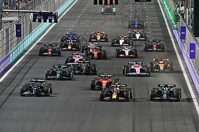
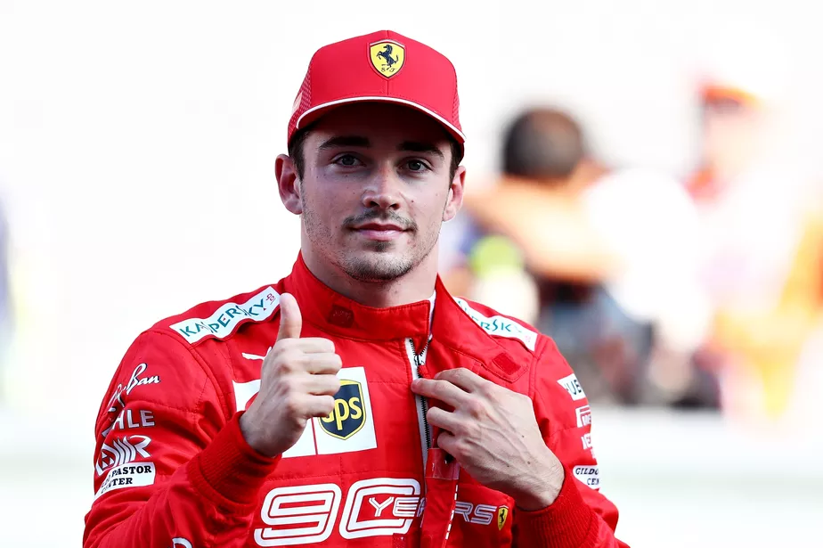
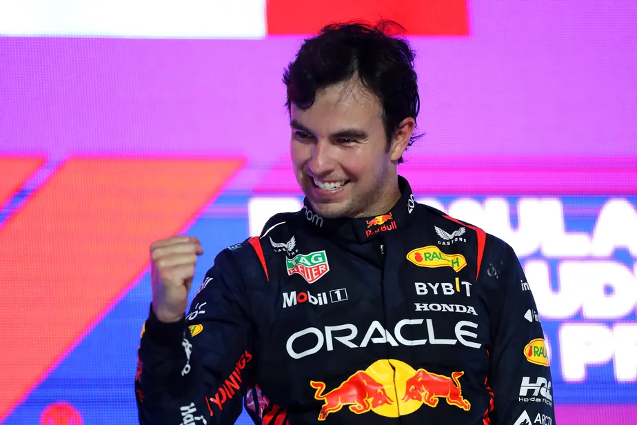

Formula 1 2022
Índice
- 2022 formula 1
- Max Verstappen
- Charles Leclerc
- Sergio Pérez
- Equipes de 2022
Ano de 2022 da Formula 1
O campeonato foi disputado em 22 etapas, tendo iniciado no Barém, em 20 de março,
e terminado nos Emirados Árabes Unidos, em 20 de novembro. Na temporada de 2022 foi introduzido mudanças
significativas nos regulamentos
técnicos do esporte, Em 9 de outubro de 2022, Max Verstappen venceu o
Grande Prêmio do Japão em Suzuka, sagrando-se bicampeão mundial de Fórmula 1.

Max Verstappen
Com apenas 16 anos, chacoalhou o mundo com com um desempenho muito acima de média que o levou precocemente à
Scuderia Toro Rosso na F1. Estreou em 2015 e tornou-se o mais jovem piloto da história da categoria. Foi
promovido à Red Bull Racing em 2016 e venceu o GP da Espanha,
sua estreia na nova casa. Terminou o ano em quinto no Mundial de Pilotos.Em 2021 ele foi proclamado campeão de
Fórmula 1 após vencer no Grande Prêmio de Abu Dhabi, derrotando o atual campeão Lewis Hamilton na última volta,
com quem havia alcançado a última corrida empatada em pontos e em 2022, Verstappen conquistou o título de forma
dominante.

Charles Leclerc
O monegasco surgiu com destaque correndo na Sauber,
e migrou para a Ferrari em 2019, passando a brigar por vitórias imediatamente. Com a queda de desempenho da
equipe italiana em 2020,
coube ao piloto conseguir os melhores resultados.Em 2022, começou bem, sofreu com falhas da equipe. Ainda assim,
foi vice-campeão.

Sergio Pérez
Sergio Perez quebrou um tabu: É o primeiro piloto nascido no México a ingressar na Fórmula 1 depois de 30 anos!
O último piloto foi Hector Rebaque em 1981, quando este correu pela Brabham no GP de Lás Vegas.

Equipes de 2022
Mercedes
Red Bull
Ferrari
McLaren
Alpine
AlphaTauri
Aston Martin
Williams
Alfa Romeo
Haas
| GP |
VENCEDOR |
EQUIPE |
GP do Barém |
Max Verstappen |
Red Bull |
GP da Arábia Saudita |
Max Verstappen |
Red Bull |
GP da Austrália |
Charles Leclerc |
Ferrari |
GP Emília-Romanha |
Max Verstappen |
Red Bull |
GP de Miami |
Max Verstappen |
Red Bull |
GP da Espanha |
Max Verstappen |
Red Bull |
GP de Mônaco |
Sergio Pérez |
Red Bull |
GP do Azerbaijão |
Max Verstappen |
Red Bull |
GP do Canadá |
Max Verstappen |
Red Bull |
GP da Grã-Bretanha |
Carlos Sainz |
Ferrari |
GP da Áustria |
Charles Leclerc |
Ferrari |
GP da França |
Max Verstappen |
Red Bull |
GP Hungria |
Max Verstappen |
Red Bull |
GP da Bélgica |
Max Verstappen |
Red Bull |
GP dos Países Baixos |
Max Verstappen |
Red Bull |
GP da Itália |
Max Verstappen |
Red Bull |
GP de Singapura |
Sergio Pérez |
Red Bull |
GP do Japão |
Max Verstappen |
Red Bull |
GP dos Estados Unidos |
Max Verstappen |
Red Bull |
GPda Cidade do México |
Max Verstappen |
Red Bull |
GP de São Paulo |
George Russel |
Mercedes |
GP de Abu Dhabi |
Max Verstappen |
Red Bull |
Bibliogafia